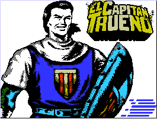

|
 |
JOGO: El Capitán Trueno I
MSX: 1
CRIADORES: Dinamic e Gamesoft
TIPO: Aventura
ANO: 1989
OBSERVAÇÕES:O jogo não roda em MSX
2 ou superior, transformados no Brasil. Roda perfeitamente nos
emuladores BrMSX, Fmsx-dos e Ru-MSX. |
Você é um guerreiro que ira invadir um castelo
em busca da amada. O herói pode se transformar em Crispin
e Goliath. Como Capitan, você luta contra os inimigos,
como Crispin, escala cordas e Goliath pula para detonar os inimigos,
porém não anda.
Confira as dicas no final desta edição.
|
Começe andando para toda a direita, até achar
a sineta vermelha, como indica a foto ao lado. Pule (seta para
cima) até ouvir o som da sineta. Volte para a tela anterior
e suba na corda com Crispin.Pule para direita e transforme-se
em Capitan. Siga para a direita, enfrentando os leões.Após
três telas, você enfrentará aranhas gigantes.
Para matar as aranhas, dê dois golpes de espada.Se você
apertar Pausa, aparece um menu. Compre energia e vidas. |
|
|
Seguindo para a direita, você chegará ao final
da ponte. Há uma porta (fig. 3), mas não dá
para entrar. Siga para a direita, passe por duas aranhas e suba
a corda. Encoste no fundo do sino, até ouvir o barulho.
Desça e volte para a esquerda, até a porta. Pressione
a seta para esquerda para entrar.Pule na chave vermelha, indicada
na fig. 4, para abrir passagem. Use Crispin para descer as cordas.
Ah, para pular mais alto, segure o para cima até que
ele dê dois pulos, este, mais alto!! |
|
|
|
Você chegará em um local fechado por um muro e uma
nova corda, mais a direita para descer. Este muro será
aberto futuramente.Agora desça com cuidado, pois há
ratos subindo pela parede! Não se preocupe, pois se você
não se mecher, ele não te ataca.Aproveite os intervalos
de ratos para então descer.Você passará por
um túnel, à esquerda da corda. Continue descendo.
Quando chegar ao túnel à direita da corda, |
|
|
pule (mais alto que o túnel) para o túnel.Pegue
o diamante e suba até o local onde troca as cordas. O
muro saiu! Entre no túnel.Agora a parte decisiva do jogo.
Coloque o diamante no poste (fig. 5) e volte para o túnel
rápido, senão você fica preso na câmara
e ... fim de jogo.Sugestão: Pule com seta para cima para
por o diamante e tecle seta esquerda para voltar ao túnel.
Lembre-se: corra!!Não se preocupe com a parede descendo
em você. Ela não o esmaga. |
|
|
Passando deste ponto, não há mais risco de ficar
numa "sinuca de bico"*.Desça até
o fundo do poço e entre no túnel da esquerda. Siga
o túnel.Quando sair, volte com o Capitan. Cuidado com
os inimigos.Você chegará até um paredão
(fig. 6). Aparentemente não há saída. Transforme-se
em Goliath e pule. Agora, há!Siga para a esquerda e suba
na corda com Crispin.Como no outro poço, cuidado com os
ratos. |
* Sinuca de bico = Expressão usada no
jogo de sinuca, equivale a uma situação sem saída.
Suba até o topo. Se você cair da corda, ponha o
cursor na direção da corda.
Ali há uma caveira. Seja rápido! Caia atrás
da caveira e use o Capitan. Detone logo a caveira.
Siga para a direita, detonando as caveiras. Elas tiram muita
energia, mas um golpe acaba com elas.Quando chegar ao local da
fig. 7, pegue a espada. Pronto. Capitan agora lança espadas.
Volte. |
|
|
Agora você pode comprar espadas, no menu do pause.Nosso
objetivo agora é voltar ao fim do primeiro poço.Antes
de irmos para o poço, teremos que ganhar dinheiro com
os sapos. O que precisamos comprar algumas vidas e espadas (+
duas).Se você se lembra do fim do poço 1 (fig. 8),
agora podemos ir mais fundo. Desça.Aproveite o caminho
até o fim do poço 1 para ganhar moedas.Desça
o poço, tomando cuidado com os ratos. Desça até
o fundo. |
|
|
Chegando ao fundo, encontraremos 2 caveiras. Já
sabe: Capitan. Detone as caveiras.Siga para a esquerda, tomando
cuidado com as caveiras.Agora chegamos às poças
(fig. 9). Detone as bolhas e pule. Cada bolha se transforma em
um fantasma. Deixe o Capitan mesmo.Se quiser passar pela bolha,
não faz mal. Ela não tira muita energia.São
ao todo três telas de bolhas. Cuidado quando pular!Agora,
chegamos a um paredão, igual |
|
|
ao da fig. 6. Use o Goliath para derrubá-lo.Cuidado
com o que está por vir!O monstro da fig. 10 parece difícil,
mas não é.Se você têm a espada tripla,
vai ser moleza. Fique no canto direito da tela, pulando e atirando.
Fim do monstro.Siga para a direita e suba a corda, até
o topo do poço.Chegando lá (fig. 11), cuidado para
não passar do fim da corda, senão você vai
cair! Chegue ao máximo e coloque para a direita. |
|
Se você estiver de costas para o lado direito da tela,
pressione a seta para esquerda para ele virar de lado. Use o
Capitan e siga toda vida para a direita. Com a espada tripla,
fica moleza detonar sapos e aranhas. Você chegará
ao local da fig. 12. É só entrar na porta e o jogo
lhe dará a clave de acesso para a segunda aventura, El
Capitán Trueno II. Fim do jogo !!! |
|
|
|
|
|
|
|
|
DICAS:
* Consiga uns 6000 em moedas, logo no inicio.
* O rato do poço só te atinge com o corpo, isto
é, o rabo dele não o acerta.
* Quando pegar a espada, compre mais duas. Você então
terá uma tripla espada.
* Compre mais uma ou duas vidas. |
|